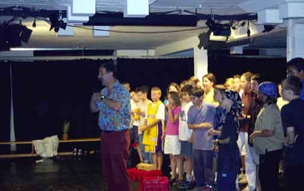

Vorhang auf!

Kaum ein Gymnasium ohne Schultheater! Kein Wunder, dass auch wir im Gisela-Gymnasium eine Theatergruppe haben. Viele träumen sogar von einer Bühnenkarriere. Besonders Mädchen. Ach, die wollen alle unbedingt Schauspielerinnen werden!
In diesem Jahr haben wir ein eigenes Stück erarbeitet, und das in englischer Sprache. Wir erzählten, was alles passieren kann, wenn einer plötzlich auf eine einsame Insel kommt. Klar, dass dabei manches durcheinander geriet und der gute alte Robinson nicht nur mit Piraten zu kämpfen hatte. Wie aber erzählt man so eine spannende Geschichte live auf circa 50 Quadratmetern Spielfläche in einem Theaterkeller ohne Computeranimation, Vorhang oder Drehbühne. Da mussten wir uns mächtig was einfallen lassen.
Aber die Mühe hat sich gelohnt. Die Vorstellung war ein voller Erfolg. Das Publikum klatschte und alle waren happy. Besonders der Robinson. Den hat man ja schließlich vor bösen Piraten gerettet. Und danach gab es Kaffee und Kuchen. Schließlich haben wir das verdient.